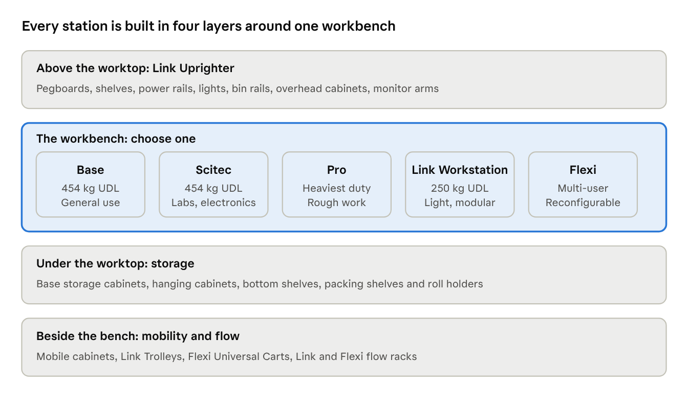
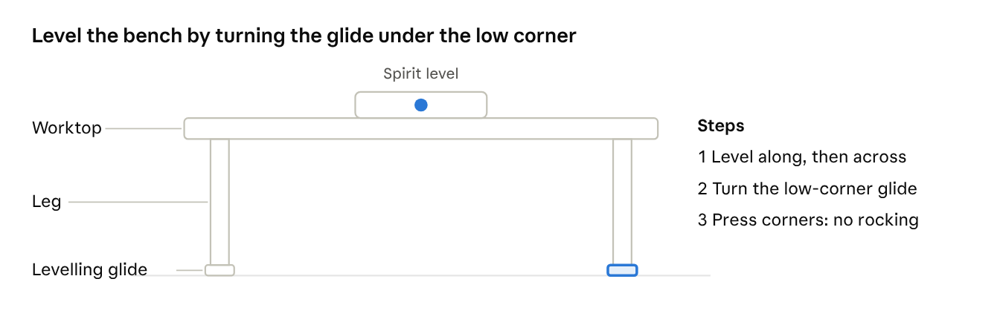
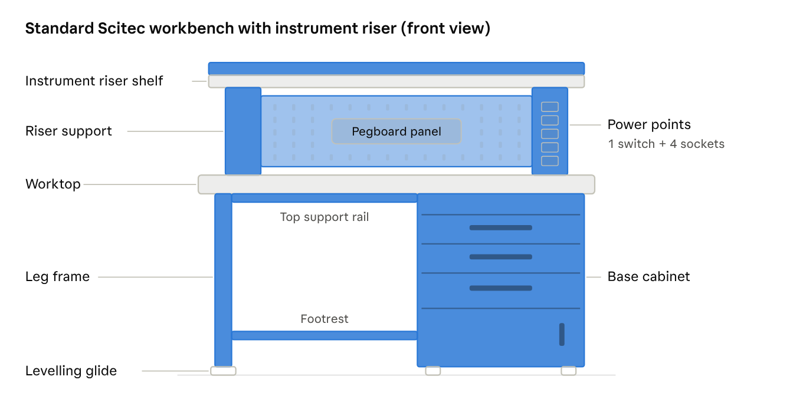

Each chapter covers one product family. Steps are numbered in the order you do them; load limits are shown as UDL (uniformly distributed load), meaning the weight spread evenly across the surface.
Important: our team installs your furniture to the agreed scope. Use this manual for everyday adjustments and use; for relocation, major reconfiguration or replacement parts, contact Furnisys support.
The product range at a glance

Pick one workbench, then add what your task needs above it, under it and beside it. Link accessories fit Base, Scitec and Pro benches alike, so a station can grow as your process changes.
1. Before you start
Placing your furniture
Place the bench on a firm floor, away from walkways and door swings.
Leave enough room behind it to reach power points and to move chairs or trolleys.
Keep heavy machines and precision instruments, such as balances, on separate benches, so vibration from one does not affect the other.
Levelling the bench
Every bench stands on levelling glides. On uneven or trimix floors, your bench may have threaded stud levellers (M12 x 25) with 10–15 mm of adjustment.
Place a spirit level on the worktop, first along its length, then across its depth.
Turn the glide or leveller under the low corner until the bubble is centred.
Press down on each corner. If the bench rocks, adjust the glide under the corner that lifts.
Re-check the level whenever the bench is moved or a heavy machine is added.

Check before first use
All legs, frames and uprights are firmly in place and nothing moves when you push the worktop.
Castors on trolleys and mobile cabinets lock and unlock.
Power rails and outlet strips are connected to a suitable supply by a qualified electrician.
2. Using your workbench: Base, Scitec and Pro

This is the standard Scitec configuration: one leg frame, one base cabinet and an instrument riser with a pegboard panel. Your bench may instead have leg frames at both ends, base cabinets at both ends, or an adjustable riser shelf; the part names are the same on Base and Pro benches.
Setting the working height
Choose a height that keeps the operator's shoulders relaxed: about 750–850 mm for seated work and 900–1100 mm for standing work.
| Workbench | How to change height |
|---|---|
| Base | Fit leg extenders in 2" steps, up to 6" (overall 32" to 42"). Use a set of 4 extenders, or 6 where the bench has a middle leg. |
| Scitec | Fit leg extenders in 1" steps, up to 6" (set of 4). |
| Pro | Height is set by the leg size (700 to 1000 mm). Ask us for a different leg height. |
Always fit extenders to every leg at the same height, then re-level the bench.
Placing loads on the worktop
Spread weight across the worktop. Base and Scitec benches carry 454 kg UDL.
Put heavy machines over or close to a leg frame or base cabinet, not in the middle of a long span.
Keep the support rails and extra leg in place on long benches (84" and wider); do not remove them to gain legroom.
Use a rubber mat under tools and parts that could scratch or dent the worktop.
Using the shelves below the worktop
Base undershelf (12" or 18" deep): for boxes and spare stock you need daily.
Scitec bottom shelf: telescopic; up to 45 kg UDL.
Pro bottom shelf: telescopic heavy-gauge steel; up to 68 kg UDL.
Footrest: rest your feet on it when seated; do not stand on it.
Using hanging drawers and cabinets
Base hanging drawers slide along the underside of the worktop. Move them to the position that suits the operator, sitting or standing.
Scitec and Pro hanging cabinets hold up to 22.5 kg per drawer. Keep them at the opposite end from a bench vice or keypad.
Pull drawers out by the integrated handle; close them fully before moving around the bench.
The shallow lap drawer has no lock, so do not keep valuables in it.
Using the riser shelf (above the worktop)
Base riser shelf: sits on steel box supports, 19" high. If an electrical panel insert is fitted, it gives a breaker-protected socket at the back of the bench.
Scitec and Pro adjustable riser shelf: the support brackets move in 1.5" steps, from 12" to 18" above the worktop. Lift the shelf off, move both brackets to the same notch, and refit it.
Scitec instrument riser: put oscilloscopes, meters and laptops on the riser to keep the worktop clear. If your supports have power, plug instruments into the riser's switch sockets (1 switch + 4 sockets).
Using the outlet strip (Base)
The 48" outlet strip, mounted on top of or under the worktop, has 8 outlets of 6/16 A (7 sockets + 1 MCB), an on/off switch and a circuit breaker. Switch it off at the end of the shift. If the breaker trips, unplug the last device added before resetting it.
Using back stops and end stops
Back stops stand 4" above the worktop on Base benches, and stop small parts from rolling off. On Scitec and Pro, end stops have rounded corners and are 2" shorter than the worktop depth, so you can still slide items on from the front.